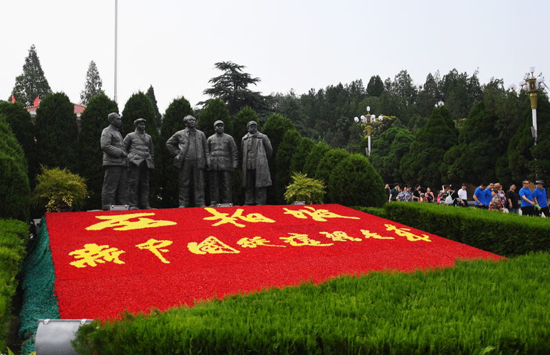
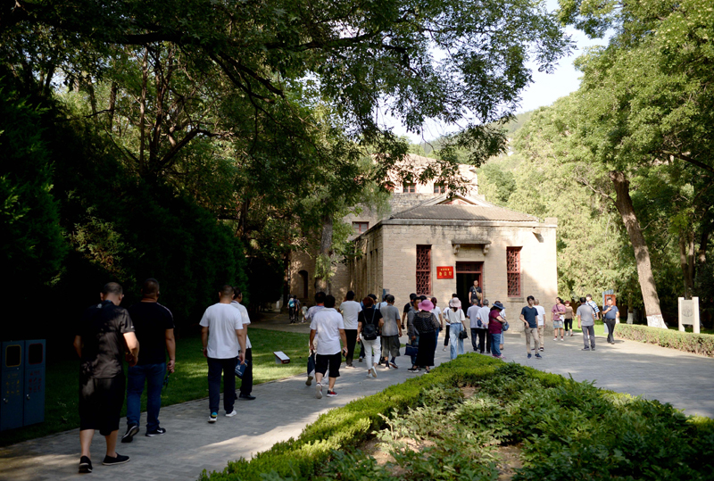
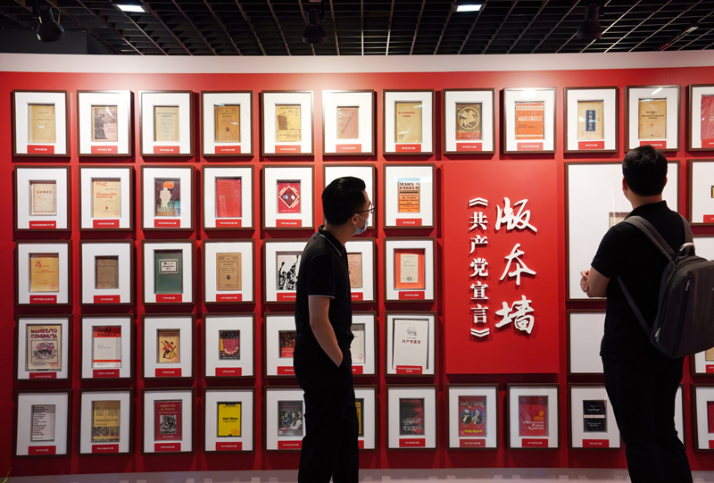

历史，总是在一些特殊的时刻，给人以深刻的启迪。

游客在河北西柏坡纪念馆广场参观（2017年6月30日摄）。新华社记者 王晓 摄
1949年3月23日上午，毛泽东主席率领中央机关离开西柏坡，向北平进发，临行前的话意味深长：“今天是进京赶考的日子”。
2013年7月，党的十八大后第一次党内集中教育——党的群众路线教育实践活动开展之时，习近平总书记来到西柏坡。纪念馆内，总书记久久凝思：“党面临的‘赶考’远未结束。”
历史照亮未来，征程未有穷期。
这是2019年10月1日清晨拍摄的河北西柏坡纪念碑（无人机照片）。新华社记者 王晓 摄
中国共产党即将迎来百年华诞之际，又一场党内集中教育——党史学习教育在全党如火如荼展开。
党的十八大以来，习近平总书记的足迹遍及革命老区和革命圣地，重温红色记忆、讲述感人故事、阐释党史启迪，为全党学史明理、学史增信、学史崇德、学史力行树立了光辉典范。
明理增信——阐释百年党史内在逻辑和深刻启示，进一步坚定“四个自信”
天安门广场东侧，中国国家博物馆巍峨矗立。
这是在湖南省郴州市汝城县沙洲瑶族村“半条被子的温暖”专题陈列馆拍摄的“半条被子”故事雕塑（2020年9月17日摄）。新华社记者 陈思汗 摄
步入《复兴之路》基本陈列展厅，历史的烽烟扑面而来。
“现在，大家都在讨论中国梦，我以为，实现中华民族伟大复兴，就是中华民族近代以来最伟大的梦想。”
2012年11月29日，当选中共中央总书记仅15天的习近平同志，带领十八届中共中央政治局常委来到这里，郑重宣示。
胸怀千秋伟业，恰是百年风华。

游客在陕西延安杨家岭革命旧址参观（2019年7月31日摄）。新华社记者 刘潇 摄
习近平总书记始终以大历史观审视和把握党史，始终将其与新中国史、改革开放史、社会主义发展史联系在一起学习思索。
总书记深刻指出：“中国共产党的历史是中国近现代以来历史最为可歌可泣的篇章”，建立中国共产党、成立中华人民共和国、推进改革开放和中国特色社会主义事业，“是近代以来实现中华民族伟大复兴的三大里程碑”。
学史明理，翻开百年激荡的红色篇章，习近平总书记深刻揭示纷繁历史烟云背后一以贯之的必然逻辑。
在参观《复兴之路》展览时，习近平总书记生动讲述了“真理的味道”。
观众在上海中共一大会址纪念馆内参观（2020年11月13日摄）。新华社记者 刘颖 摄
“一天，一个小伙子在家里奋笔疾书，妈妈在外面喊着说：‘你吃粽子要加红糖水，吃了吗？’他说：‘吃了吃了，甜极了。’结果老太太进门一看，这个小伙子埋头写书，嘴上全是黑墨水。”指着陈列柜中的《共产党宣言》中文译本，总书记说，“这人是谁呢？就是陈望道，就是写这本书。”
5年后，党的十九大闭幕仅一周，习近平总书记带领新一届中央政治局常委专程前往上海和浙江嘉兴。在中共一大会址，总书记又一次讲起这本小册子的故事。
真理的味道为何如此甘甜？正是因为在寻求救国救民之路的几经挫折、惨痛血泪中，马克思主义犹如一道刺破暗夜的闪电，给苦难深重的旧中国带来了犹如久旱逢甘霖的希望。
这是在上海中共一大会址纪念馆拍摄的1920年8月（左）和9月出版的《共产党宣言》中文全译本（2020年6月23日摄）。新华社记者 刘颖 摄
2020年9月17日下午，千年学府岳麓书院，细雨绵绵，正在湖南考察的习近平总书记来到这里。
讲堂前，总书记撑着伞，望着檐上的“实事求是”匾额，久久凝思。
“毛主席当年就是在这里熏陶出来的，实事求是就来源于这里。共产党怎么能成功呢？当年在石库门，在南湖上那么一条船，那么十几个人，到今天这一步。这里面的道路一定要搞清楚，一定要把真理本土化。”
回望党史，才能更加深刻体会到，找到一条正确道路是多么不易。
这是1月26日拍摄的贵州遵义会议会址。新华社记者 欧东衢 摄
百年来，中国共产党正是坚持解放思想、实事求是、与时俱进、求真务实，坚持马克思主义基本原理同中国具体实际相结合，才创造出改天换地、翻天覆地的伟大奇迹。
2015年2月14日，延安杨家岭，中央大礼堂。在党的七大召开70周年之际，正在陕西考察的习近平总书记来到这里。
这次彪炳史册的会议，把毛泽东思想写在党的旗帜上，见证了这个年轻的马克思主义政党走向成熟的重要进程。
“我们党之所以能够历经考验磨难无往而不胜，关键就在于不断进行实践创新和理论创新。”站在当年的会场，习近平总书记深有感慨。
从毛泽东思想、邓小平理论、“三个代表”重要思想、科学发展观到习近平新时代中国特色社会主义思想，一部百年党史，就是一部实践基础上的理论创新史。
来到北京大学这个中国最早传播和研究马克思主义的地方，习近平总书记勉励抓好马克思主义理论教育，深化学生对马克思主义历史必然性和科学真理性、理论意义和现实意义的认识。
观众在辽宁抚顺雷锋纪念馆内参观（2016年3月2日摄）。新华社记者 姚剑锋 摄
在云南考察时，习近平总书记来到腾冲的艾思奇纪念馆，称赞艾思奇是“把马克思主义本土化讲好的人才”，强调要传播好马克思主义，不能照本宣科、寻章摘句，要大众化、通俗化。
……
学史增信，在考察调研中，习近平总书记多次深刻阐释马克思主义是如何深刻改变中国、改变世界的，引导全党感悟马克思主义的真理力量和实践力量，不断坚定中国特色社会主义“四个自信”。
从理论上的清醒到政治上的坚定，在对历史经验乃至教训的总结反思中，习近平总书记一次次告诫坚持和加强党的全面领导的极端重要性。
贵州，红色的土地。
2015年6月16日，习近平总书记到贵州考察，第一站就来到遵义。
这是位于江西于都县的中央红军长征出发纪念碑（2019年6月12日摄，无人机照片）。新华社记者 周密 摄
按当年场景布置的会议室里，挂着一张当年与会人员的黑白照片。习近平总书记走近仔细观看：“遵义会议作为我们党历史上一次具有伟大转折意义的重要会议，在把马克思主义基本原理同中国具体实际相结合、坚持走独立自主道路、坚定正确的政治路线和政策策略、建设坚强成熟的中央领导集体等方面，留下宝贵经验和重要启示。”
2021年2月3日，习近平总书记再次来到贵州考察。迈步乌江河畔，望着对岸的悬崖峭壁，总书记感叹：“从这里就可以想象当年红军强渡乌江有多难！”
百年党史，多少跌宕起伏，几多惊心动魄，绝处逢生、化危为机靠的是什么？
“遵义会议的鲜明特点是坚持真理、修正错误，确立党中央的正确领导，创造性地制定和实施符合中国革命特点的战略策略。这在今天仍然具有十分重要的意义。”习近平总书记的话语意味深长。
坚持党的领导，必须加强党的建设。一部百年党史，就是一部党的自我革命史。
位于福建省上杭县古田镇的古田会议会址（1月14日摄，手机照片）。新华社记者 秦宏 摄
重访福建古田会议旧址，召开全军政治工作会议，推动强军工作开创新局面；再到河北西柏坡，感悟“两个务必”深意，推动全面从严治党纵深发展；来到北京香山，提醒全党以“赶考”的清醒和坚定答好新时代的答卷……
通过一堂堂历史现场的“党史教学课”，习近平总书记引领人们更加深刻地理解中国共产党为什么能、马克思主义为什么行、中国特色社会主义为什么好。
崇德立心——赓续百年党史红色基因和优良传统，挺起共产党人的精神脊梁
2015年9月2日，人民大会堂金色大厅，威武的仪仗兵正步入场、持枪伫立，号手吹响嘹亮的礼号。
这是北京香山革命纪念馆外景（2019年9月13日摄）。新华社记者 任超 摄
习近平总书记为在抗战中立下汗马功劳的元勋或他们的遗属一一佩挂上金光闪闪的“中国人民抗日战争胜利70周年纪念章”，并同他们紧紧握手，向他们表示崇高敬意。
一个有希望的民族不能没有英雄，一个有前途的国家不能没有先锋。
从井冈山革命烈士陵园，到金寨县革命烈士纪念塔，再到红军长征会师纪念碑；从中国人民抗日战争胜利纪念日，到烈士纪念日，再到南京大屠杀死难者国家公祭日……党的十八大以来，英魂长眠之地，祭奠英灵之时，习近平总书记追思英雄、致敬英雄的场景感动人心。
学史崇德，就是要发扬红色传统、传承红色基因、赓续精神血脉。
停靠在浙江嘉兴南湖湖心岛的南湖红船（2020年10月27日摄）。新华社记者 徐昱 摄
“每到井冈山、延安、西柏坡等革命圣地，都是一种精神上、思想上的洗礼。”习近平总书记常说，“多重温这些伟大历史，心中就会增加很多正能量。”
这力量，源自对革命理想的信守——
江西赣州，中央红军长征出发纪念碑高高挺立于都河畔，诉说着那场伟大的远征。

人们在上海市档案馆外滩馆参观“真理之甘 信仰之源——纪念陈望道首译《共产党宣言》中文全译本100周年主题展”（2020年6月24日摄）。新华社记者 刘颖 摄
2019年5月20日，习近平总书记乘飞机、坐火车、换汽车，辗转奔波7个多小时来到这里，倾听历史的回响，追寻红色的记忆。
“革命理想高于天。理想信念之火一经点燃，就永远不会熄灭。”习近平总书记动情地说，“这个理想信念我们一定要有，要把这个火烧得旺旺的。”
百年峥嵘，记载着信念之坚，激荡着英雄之气。
从出发地的于都，到经过停留的湖南郴州，到重大转折发生地的贵州遵义，到会师地宁夏将台堡，再到西路军鏖战的甘肃高台……习近平总书记一次次追寻长征的足迹，感受撼天动地的精神伟力，发出走好新时代长征路的号召。
这力量，源自对优良传统的坚守——
巴丹吉林沙漠边缘，黑河下游，坐落着中国第一个发射场——酒泉卫星发射中心。与发射塔架一同伫立的，还有长眠着700多位航天英烈的东风革命烈士陵园。
2013年春节前夕，习近平总书记来到这里向为我国航天科技事业献身的英烈敬献花篮，勉励科技工作者发扬“两弹一星”精神、载人航天精神和“东风精神”，以民族复兴为己任，追求卓越，扎根大漠，报效祖国和人民。
辽宁抚顺，雷锋的第二故乡。
这是云南和顺古镇艾思奇纪念馆一景（2020年1月20日摄）。新华社记者 胡超 摄
2018年9月，在东北三省考察时，习近平总书记专程来到抚顺市雷锋纪念馆，参观雷锋生平和事迹展。在雷锋的手迹、遗物、照片等展品前，总书记不时驻足观看，提出要把雷锋精神代代传承下去。
“如果13亿多中国人、8900多万党员、400多万党组织都能学习雷锋精神，都能在自己的岗位上做一颗永不生锈的螺丝钉，我们的凝聚力、战斗力将无比强大，我们将无往而不胜。”习近平总书记说。
这力量，源自对初心本色的恪守——
河南兰考，一个共产党人的精神地标。
2014年3月和5月，习近平总书记两次来到这里，先后参加兰考县委常委扩大会议、县委常委班子党的群众路线教育实践活动专题民主生活会。
观众在北京国家博物馆参观《复兴之路》展览（2012年12月2日摄）。新华社记者 王全超 摄
“焦裕禄同志生活简朴、勤俭办事，总是吃苦在前、享受在后。他的衣、帽、鞋、袜都是拆洗多次，补了又补、缝了又缝。他严守党纪党规，从不利用手中权力为自己和亲属谋好处。”在兰考县委常委扩大会议上，习近平总书记深情讲述了焦裕禄清廉为官的故事，激励大家努力做焦裕禄式的好党员、好干部。
狱中写下《清贫》的方志敏，被当地百姓敬称为“谷公”的谷文昌，自愿回乡当农民的将军甘祖昌，深藏功名的党的好战士张富清……习近平总书记走一路、讲一程，深情讲述革命先烈、优秀党员的故事，引导广大党员向榜样先进学习看齐，努力做到立政德、明大德、守公德、严私德。
百年征程，一代又一代共产党人顽强拼搏、不懈奋斗，形成了一系列伟大精神，构筑起了中国共产党人的精神谱系。
从革命时期的红船精神、井冈山精神、延安精神，到建设时期的抗美援朝精神、“两弹一星”精神、大庆精神，再到改革开放时期的特区精神、抗洪精神、抗震救灾精神、抗疫精神、脱贫攻坚精神……
学史崇德，一次次的深情阐释，一次次的殷殷嘱托，习近平总书记在对历史的探寻中，教育引导全党从党的历史中汲取立党兴党强党的丰厚滋养，鼓起全党迈上新征程、奋进新时代的精气神。
力行为民——探寻百年党史根基血脉和力量之源，激发造福人民的使命担当
湘赣交界处的罗霄山脉南段，坐落着一个美丽的瑶族小山村，流传着一段感人的故事。
1934年11月，途经湖南省汝城县沙洲村的3名红军女战士借宿村民徐解秀家中，临走时把仅有的一条被子剪下一半留给她。
在河南兰考县焦裕禄干部学院门口，游客从“焦桐”下走过（2017年8月9日摄）。新华社记者 冯大鹏 摄
2016年10月，在纪念红军长征胜利80周年大会上，习近平总书记讲起这段历史，“当时我在讲的时候，就深受感动”。
4年后的秋天，习近平总书记赴湖南考察。一到当地就直接赶往沙洲村，走进“半条被子的温暖”专题陈列馆。
站在红军女战士剪被子送村民的雕像前面，习近平总书记感慨地说：“红军在自己缺吃少穿、生死攸关的情况下，心里还是想着老百姓的冷暖。一枝一叶总关情啊！我们的军队是人民的队伍，我们共产党人和老百姓的感情就是共用一条被子的感情。”
在一次次考察足迹中，无论是总结历史经验、揭示历史启示，还是讲述党史故事、指导红色教育，习近平总书记始终秉持“人民是历史的创造者”这一唯物史观，始终坚持人民立场这一根本立场。
江山就是人民，人民就是江山。
“我们党的百年历史，就是一部践行党的初心使命的历史，就是一部党与人民心连心、同呼吸、共命运的历史。”正因如此，嘉兴南湖上的一叶红船，才能历经百年风雨、闯过激流险滩，成为领航中国的巍巍巨轮。
党的十九大闭幕后，地方考察第一站，习近平总书记来到江苏徐州。
深圳市城区景色（2020年8月26日摄，无人机照片）。新华社记者 毛思倩 摄
在位于凤凰山东麓的淮海战役纪念馆内，习近平总书记重点参观了人民支前等板块。一件件实物、一张张图片、一个个场景，再现了那场会师淮海的决战。
统计显示，淮海战役动员民工225万人、大小车辆40多万辆。这些车首尾相接，按两路纵队，能从南京一直排到北京。
习近平总书记一边听讲解，一边询问有关细节，他深情地说，革命胜利来之不易，靠有革命英雄主义精神的一大批将帅之才和战斗英雄，更靠人民的支持和奉献。淮海战役就是小推车推出来的胜利。我们要好好回报人民，让人民过上幸福美好的生活。
为了人民、依靠人民，人民是真正的英雄。“中华民族迎来了从站起来、富起来到强起来的伟大飞跃是中国人民奋斗出来的！”
淮海战役的胜利，是老百姓用小推车推出来的；渡江战役的胜利，是老百姓用小船划出来的；热火朝天的社会主义建设，是老百姓撸起袖子干出来的；改革开放的历史伟业，是亿万人民怀着热血与激情创造出来的……
深圳莲花山，邓小平同志铜像矗立在山顶平台上，深情注视着脚下这片土地。
2012年12月，正在广东考察的习近平总书记登上莲花山，向邓小平同志铜像敬献花篮，并在不远处亲手种下一株高山榕。
8年后，在庆祝深圳经济特区建立40周年之际，习近平总书记再次来到这里。
站在山顶平台上，习近平总书记俯瞰深圳全貌，眼前一座座摩天高楼拔地而起，勾画出一道现代化大都市亮丽的天际线。
抚今追昔，感慨深圳奇迹，总书记如是说：“深圳是改革开放后党和人民一手缔造的崭新城市，是中国特色社会主义在一张白纸上的精彩演绎”，“这是中国人民创造的世界发展史上的一个奇迹”。
从数万群众苦干10年，在悬崖峭壁间修成“人工天河”红旗渠，到小岗村民按下红手印，吹响农村改革的号角；从几代林场人将塞罕坝从黄沙荒原变为茫茫林海，到成千上万勇敢追梦的人们，将南海边的那个“圈”变成日新月异的国际大都市……
在一次次考察调研、一次次重要讲话中，习近平总书记不断教育引导全党深刻认识党的性质宗旨，始终把人民放在心中最高位置、把人民对美好生活的向往作为奋斗目标。
行程万里，初心不忘。学史力行，就是要把为民造福作为最大的政绩。
党的十八大闭幕不久，习近平总书记到河北阜平县看望慰问困难群众。
看到老区一些乡亲生活还比较困难，习近平总书记心情沉重。“我们一定要想方设法、群策群力，尽快让乡亲们过上好日子。”一番质朴的话语，指明了民族复兴路上要抓紧推进的大事。
从太行山到沂蒙山，从六盘山到大别山……无论山多高路多远，总书记总是不辞辛劳奔波，革命老区的脱贫致富，始终是他心中最大的牵挂。
如今，让老区农村贫困人口尽快脱贫的承诺如期实现，近1亿贫困人口摘下了贫困的帽子，困扰中华民族几千年的绝对贫困问题得到历史性解决。
认真回顾走过的路，不忘来时的路，继续走好前行的路。正如习近平总书记在2021年春节团拜会上所说，只要我们党始终站在时代潮流最前列、站在攻坚克难最前沿、站在最广大人民之中，就必将永远立于不败之地！